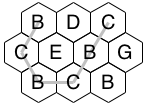
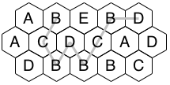

| Source file: | bounce.{c, cpp, java} |
| Input file: | bounce.in |
|  |
 |
| Figure 1 | Figure 2 |
A puzzle adapted from a 2007 Games Magazine consists of a collection of hexagonal tiles
packed together with each tile showing a letter. A bouncing path
in the grid is a
continuous path, using no tile more than once, starting in the top
row, including at least one tile in the bottom row,
and ending in the top row to the right of the starting tile.
Continuous means that the next tile in a path always shares an edge with the previous tile.
Each bouncing path defines a sequence of letters. The sequence
of letters for the path shown in Figure 1 is BCBCBC. Note that this is
just BC repeated three times. We say a path has a repetitive pattern
of length n if the whole sequence is composed of two or more copies of
the first n letters concatenated together. Figure 2 shows a repetitive
pattern of length four: the pattern BCBD repeated twice. Your task
is to find bouncing paths with a repetitive pattern of a given length.
In each grid the odd numbered rows will have the same number of
tiles as the first row. The even numbered rows will each have one
more tile, with the ends offset to extend past the odd rows on both the
left and the right.
Input: The input will consist of one to twelve data sets, followed by a line containing only 0.
The first line of a data set contains blank separated
integers r c n , where r
is the number of rows in the hex pattern
Output: There is one line of output for
each data set. If there is a bouncing path with pattern length n, then output the pattern for the shortest possible
path.
If there is no such path, output the phrase:
| Example input: | Example output: |
| 3 3 2 B D C C E B G B C B 3 5 4 A B E B D A C D C A D D B B B C 3 3 4 B D C C E B G B C B 3 4 4 B D H C C E F G B B C B C 0 |
BCBCBC BCBDBCBD no solution BCBCBCBC |
Last modified on October 18, 2012.